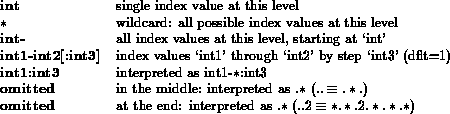

<HEAD>
<TITLE>No Title</TITLE>
</HEAD>
<BODY><P>
 <b><i>NEWSTAR </i> data-file organisation and the programs' associated user interfaces</b>
<P>
 <i>Contributed by J.E. Noordam, August 1993</i>
<P>
<A NAME=.contents></A>
<P><H2><A NAME=SECTION0001000000000000000>Contents</A></H2>
<UL> 
<LI> <A NAME=tex2html1 HREF=files_handle.html#SECTION0001000000000000000>Contents</A>
<LI> <A NAME=tex2html2 HREF=files_handle.html#SECTION0002000000000000000> <b><i>NEWSTAR </i> data and ancillary file types</b></A>
<LI> <A NAME=tex2html3 HREF=files_handle.html#SECTION0003000000000000000> <b>Directories and nodes (files)</b></A>
<LI> <A NAME=tex2html4 HREF=files_handle.html#SECTION0004000000000000000> <b>The <i>NEWSTAR </i> data files (SCN, MDL, WMP)</b></A>
<UL> 
<LI> <A NAME=tex2html5 HREF=files_handle.html#SECTION0004100000000000000> <b>Data file logical organisation: Sets</b></A>
<LI> <A NAME=tex2html6 HREF=files_handle.html#SECTION0004200000000000000> <b>Using loops</b></A>
</UL> 
<LI> <A NAME=tex2html7 HREF=files_handle.html#SECTION0005000000000000000> <b>Overview of interactions with the SCN file</b></A>
<UL> 
<LI> <A NAME=tex2html8 HREF=files_handle.html#SECTION0005100000000000000> <b>Creating SCN files</b></A>
<LI> <A NAME=tex2html9 HREF=files_handle.html#SECTION0005200000000000000> <b>Inspecting the contents of a SCN file</b></A>
<LI> <A NAME=tex2html10 HREF=files_handle.html#SECTION0005300000000000000> <b>Editing the header information of a SCN file</b></A>
<LI> <A NAME=tex2html11 HREF=files_handle.html#SECTION0005400000000000000> <b>Applying corrections to uv-data</b></A>
<LI> <A NAME=tex2html12 HREF=files_handle.html#SECTION0005500000000000000> <b>Modyfing the stored corrections</b></A>
<LI> <A NAME=tex2html13 HREF=files_handle.html#SECTION0005600000000000000> <b>Modifying a uv-model in the SCN-file</b></A>
<LI> <A NAME=tex2html14 HREF=files_handle.html#SECTION0005700000000000000> <b>Reorganisation of SCN files</b></A>
<LI> <A NAME=tex2html15 HREF=files_handle.html#SECTION0005800000000000000> <b>Export of uv-data from SCN files</b></A>
</UL> 
<LI> <A NAME=tex2html16 HREF=files_handle.html#SECTION0006000000000000000> <b>Overview of interactions with an MDL file</b></A>
<UL> 
<LI> <A NAME=tex2html17 HREF=files_handle.html#SECTION0006100000000000000> <b>Adding source components to an MDL file</b></A>
<LI> <A NAME=tex2html18 HREF=files_handle.html#SECTION0006200000000000000> <b>Modifying a model in an MDL file</b></A>
<LI> <A NAME=tex2html19 HREF=files_handle.html#SECTION0006300000000000000> <b>Inspecting, displaying and sorting an MDL model</b></A>
<LI> <A NAME=tex2html20 HREF=files_handle.html#SECTION0006400000000000000> <b>The various uses of an MDL model</b></A>
</UL> 
<LI> <A NAME=tex2html21 HREF=files_handle.html#SECTION0007000000000000000> <b>Overview
of interactions with a WMP file</b></A>
<UL> 
<LI> <A NAME=tex2html22 HREF=files_handle.html#SECTION0007100000000000000> <b>Creating maps in WMP files</b></A>
<LI> <A NAME=tex2html23 HREF=files_handle.html#SECTION0007200000000000000> <b>Inspecting the contents of a WMP file</b></A>
<LI> <A NAME=tex2html24 HREF=files_handle.html#SECTION0007300000000000000> <b>Operations on WMP images</b></A>
<LI> <A NAME=tex2html25 HREF=files_handle.html#SECTION0007400000000000000> <b>.LOG files</b></A>
<LI> <A NAME=tex2html26 HREF=files_handle.html#SECTION0007500000000000000> <b>.PLT files</b></A>
<LI> <A NAME=tex2html27 HREF=files_handle.html#SECTION0007600000000000000> <b>.NGI files</b></A>
</UL>
</UL>
<H1><A NAME=SECTION0002000000000000000> <b><i>NEWSTAR </i> data and ancillary file types</b></A></H1>
<P>
The <i>NEWSTAR </i> programs recognize three major types of data files, which are identified by their extension:  
<BR><BR>.SCN files: uv-data and uv-model  
<BR>.MDL files: SELFCAL source model  
<BR>.WMP files: maps of various kinds
<P>
<i>NEWSTAR </i> programs also produce a number of ancillary files, with the following extensions (the list may no longer be complete):  
<BR><BR>.PLT-files: to be plotted  
<BR>.LOG-files: to be printed  
<BR>.NGF-files: produced by NGALC  
<BR>.MNG-files: used to make plots with the MONGO package
<P>
        The relations between these files and the <i>NEWSTAR </i> programs are shown in <A HREF=" #.newstar.overview">figure</A>.
<P>
<A NAME=.newstar.overview></A>  Overview of the Newstar programs and data files and their interrelations. For information on entities in this diagram see <BR><A HREF="../fig/newstar_overview.ps"><STRONG>FIGURE</STRONG></A> 
 <i><BR>programs  
  <A HREF="../ncalib_descr/ncalib_descr.html"><b>NCALIB</b></A>,  
  <A HREF="../nmap_descr/nmap_descr.html"><b>NMAP</b></A>,  
  <A HREF="../nscan_descr/nscan_descr.html"><b>NSCAN</b></A> <BR>files 
  <A HREF="../scn_file/scn_file.html"><b>.SCN file</b></A>,  
  <A HREF="../wmp_descr/wmp_descr.html"><b>.WMP file</b></A>, 
  <A HREF="../mdl_descr/mdl_descr.html"><b>.MDL file</b></A> </i>
<P>
<A NAME=.nodes></A>  
<H1><A NAME=SECTION0003000000000000000> <b>Directories and nodes (files)</b></A></H1>
<P>
        For historical reasons, the <i>NEWSTAR </i> programs refer to data files as <b>nodes</b> in a <b>database</b>.  In fact, they are just files in a directory.  Users are recommended to use a separate sub-directory for each data reduction project.
<P>
        However, although they refer to the same thing, there is a slight difference between <b>node names</b> used by the user and the actual <b>file names</b>: Node names are a series of alpha-numeric character strings separated by dots, e.g.:
<P>
 <PRE> 
    mynode 
    mynode.21cm.yesterday.s.x.c.d.file.dd 
</PRE>
<P>
The maximum length of a node name is 80 characters (which means maximally 39
dots). This is converted to a <em>file name</em> by: 
<BR>- appending the extension (.SCN, .MDL or .WMP), <BR>- converting all dots (.) to underscores (_), <BR>- converting all lowercase to uppercase, 
- replacing the underscore nearest but less than 47 to a dot. (?) <BR><BR>This file name is then prefixed with the current database (default nothing).
<P>
        Parts of a node name can be set aside for short-hand use.  This can be
done by the INFIX keyword (see COMMON keywords), or in a node specification by
enclosing a part in parenthesis ().  This enclosed part will from then on be
available to all programs that are run in <b>the current stream</b>.  Reference
to `the infix' is made by typing a #, e.g.:
<P>
 <PRE> 
    mynode.21(cm.yesterday.s.x.c.d.file.d)d 
</PRE>
<P>
Typing <tt>mynode.92#e</tt> will then produce <tt>mynode.92cm.yesterday.s.x.c.d.file.de</tt>
<P>
The database (directory) name can also be included in the node definition:
<P>
 <PRE> 
    wnb/data/mynode 
    ../other/mynode.21cm.yesterday.s.x.c.d.file.dd 
</PRE>
<P>
        If a database is specified in this way, it will be saved in such a way
that all subsequent program runs <b>in the same stream</b> that have no explicit
database specified, will use it, including the currently running program at all
its further node questions.
<P>
<H1><A NAME=SECTION0004000000000000000> <b>The <i>NEWSTAR </i> data files (SCN, MDL, WMP)</b></A></H1>
<P>
        These three <i>NEWSTAR </i> data files are each described in detail in their
own `File Description' chapter in this Handbook.  In this Overview section, it
is explained how the basic units (called Sets) in such a file can be selected
individually or in groups.  For each of the three data files, an overview is
given of the various ways in which the user may interact with these `objects',
with references to the relevant program options.
<P>
<A NAME=data.sets></A> 
<H2><A NAME=SECTION0004100000000000000> <b>Data file logical organisation: Sets</b></A></H2>
<P>
        The three main <i>NEWSTAR </i> data file (node) types are logically organised
in the same way: they consist of a number of basic units called `Sets', which
can be selected by the user in two ways:
<P>
<UL><LI> 
        By <b>direct reference</b> to an absolute set index: <tt>#ir</tt> selects
set nr <tt>ir</tt>, in which <tt>ir</tt> can be a range of contiguous sets (see
below).  Direct reference is only useful if the user knows exactly how the
various Sets are ordered in the file.
<P>
<LI> 
        By <b>indexed reference</b> to a series of indices that represent
parameters like map or channel nr.  A `selector' consists of a series on
integer indices, separated by points.  The indices may also be specified as
ranges of indices or wildcards ().  For instance: <tt>ir1.ir2.*.ir4</tt>
selects all Sets with index values in the indicated ranges. 
</UL>
<P>
        <b>Index ranges</b> (<tt>ir</tt>) can take the following forms <b>(NB: 
Indices start at 0!)</b>:
<P>
<P><P>
<P>
<A NAME=loops></A> 
<H2><A NAME=SECTION0004200000000000000> <b>Using loops</b></A></H2>
<P>
        Sometimes a program must be run more than once for the same 
SCN-file, but for different Sets.  In that case, the <b>LOOPS</b> keyword can
used to specify subsequent ranges of Sets.  A loop is specified by means of a
pair of values: The first value indicates how often the loop should execute,
the second specifies an increment to be given to the Set specification at each
run.
<P>
        For example: <tt>loops=3,..2</tt> indicates that the program has to run
three times, each time incrementing the 3rd Set index by 2.  So, if the first 
Set (selected with the keyword SETS) was <tt>0.0-3.2.5.*</tt>, the program will be
run three times, for the Sets
<P>
 <PRE> 
   0.0-3.2.5.*.
   0.0-3.4.5.*.
   0.0-3.6.5.*.
</PRE>
<P>
<b>Nested loops</b> can be specified by stringing loop definitions (pairs of
values) together.  For instance: <tt>loops=3,..2,5,...3</tt> adds an inner loop of 
5 program runs in which the 4th Set index is incremented by 3 each time:
<P>
 <PRE> 
   0.0-3.2.5.*.   0.0-3.2.8.*.   0.0-3.2.11.*.
                  0.0-3.2.14.*.   0.0-3.2.17.*.
   0.0-3.4.5.*.   0.0-3.4.8.*.   0.0-3.4.11.*.
                  0.0-3.4.14.*.   0.0-3.4.17.*.
   0.0-3.6.5.*.   0.0-3.6.8.*.   0.0-3.6.11.*.
                  0.0-3.6.14.*.   0.0-3.6.17.*.
</PRE>
<P>
<A NAME=scn></A> 
<H1><A NAME=SECTION0005000000000000000> <b>Overview of interactions with the SCN file</b></A></H1>
<P>
        The SCN-file contains uv-data, and possibly the uv-representation of a
source model.  A single SCN-file may contain uv-data of different (but related)
observations.
<P>
        For more information, see the dedicated SCN-file section in this
chapter of the Handbook, and also the section on the program NSCAN.  It
contains a description of the structure and the contents of the 
SCN-file.
<P>
<A NAME=scn.create></A> 
<H2><A NAME=SECTION0005100000000000000> <b>Creating SCN files</b></A></H2>
<P>
- From WSRT circle files: NSCAN option LOAD. <BR>- From ATCA (Australia Telescope Compact Array) files: NATNF.<BR>- From old (R-series) SCN-files: NSCAN option FROM_OLD.<BR>- Simulated uv-data: NSIMUL? (not implemented yet).<BR><A NAME=scn.inspect></A> 
<H2><A NAME=SECTION0005200000000000000> <b>Inspecting the contents of a SCN file</b></A></H2>
<P>
- File Layout: NSCAN option SHOW<BR>- File header: NSCAN option SHOW<BR>- Set headers: NSCAN option SHOW<BR> - Telescope (dipole) angle/ellipt corr: NCALIB option POLAR 
SHOW<BR>- Scan headers: NSCAN option SHOW<BR> - Telescope gain/phase corr: NCALIB option SHOW<BR>- uv-data (corrected, converted): NSCAN option SHOW<BR>- Display of (gridded) uv-data or uv-model: See WMP file below.<BR>- Plot telescope gain/phase corr (REDC+ALGC+OTHC): NPLOT option TELESCOPE<BR>- Plot Redundancy/Selfcal residuals: NPLOT option RESIDUAL<BR>- Plot uv-data or uv-model: NPLOT option DATA or MODEL<BR>- Print average telescope gain/phase corr (R+A+O): NCALIB option SHOW<BR>- Extract various astrophysical info: NGCALC<BR><A NAME=scnt></A> 
<H2><A NAME=SECTION0005300000000000000> <b>Editing the header information of a SCN file</b></A></H2>
<P>
        Almost every value (observation parameters, corrections, etc) in the 
SCN-file headers may be edited manually by means of NSCAN option 
SHOW EDIT.  This means that, even if there is no specific <i>NEWSTAR </i> routine to
change something, it can always be done by hand.  This may be laborious in some
cases, <em>but at least it is possible!</em>.  This feature is particularly useful
in those (rare) cases where erroneous information has somehow been put in the
header during the observations in Westerbork.
<P>
<A NAME=scn.apply></A> 
<H2><A NAME=SECTION0005400000000000000> <b>Applying corrections to uv-data</b></A></H2>
<P>
        In general, uv-data in a SCN-file is <em>never physically modified</em>. 
Corrections may be applied (or de-applied) to the uv-data whenever the data is
read into memory to be processed.  The user may specify which corrections are
applied (or de-applied) by specifying the value of the general <i>NEWSTAR </i>
keywords APPLY and DE_APPLY, which are used by all <i>NEWSTAR </i> programs that
handle uv-data.  Use <tt>dws NGEN</tt> 
(see Common features of <i>NEWSTAR </i> programs).
<P>
<A NAME=scn.modify></A> 
<H2><A NAME=SECTION0005500000000000000> <b>Modyfing the stored corrections</b></A></H2>
<P>
<b>Zeroeing</b> selected corrections: NCALIB option SET ZERO
<P>
<b>Set Header</b> (corrections that are `constant' in time):<BR>- Any value: NSCAN option SHOW EDIT<BR>- POLC (dipole angle error and ellipticity corr):<BR> - Estimation: NCALIB option POLAR CALC<BR> - Manual: NCALIB option POLAR SET, EDIT, ZERO<BR> - Copying from calibrator: NCALIB option POLAR COPY<BR><b>Scan Header</b> (corrections that vary per HA):<BR>- Any value: NSCAN option SHOW EDIT<BR>- Telescope (dipole) gain/phase corr:<BR> - Estimation: NCALIB option REDUN <BR> - Redundancy (no model): REDC<BR> - Align: ALGC<BR> - Selfcal ALGC<BR> - Manual: NCALIB option SET MANUAL, ZERO, RENORM <BR> - Copying from calibrator: NCALIB option SET COPY, CCOPY, LINE<BR>- Phase Zero Difference: OTHC<BR> - Estimation: NCALIB option POLAR VZERO CALC, APPLY, ASK, SCAN <BR> - Manual: NCALIB option POLAR VZERO MANUAL, ASK<BR> - Copying from calibrator: NCALIB option POLAR VZERO COPY<BR>- Extinction corr (manual): NCALIB option SET EXTINCT<BR>- Refraction corr (manual): NCALIB option SET REFRACT<BR>- Faraday corr (input of ionosonde data): NCALIB option SET FARADAY<BR><A NAME=scn.uvmodel></A> 
<H2><A NAME=SECTION0005600000000000000> <b>Modifying a uv-model in the SCN-file</b></A></H2>
<P>
        See Overview of interactions with MDL file below.
<P>
<A NAME=scn.reorg></A> 
<H2><A NAME=SECTION0005700000000000000> <b>Reorganisation of SCN files</b></A></H2>
<P>
- Create new `Job' from Sets in the same SCN-file: NSCAN option REGROUP<BR>- Create a `secondary' SCN-file (data selection, correction): NCOPY<BR>(not implemented yet)<BR>- Delete SCN-file: Use UNIX command <tt>rm &lt;xxx&gt;.SCN</tt> (be careful!)<BR><A NAME=scn.export></A> 
<H2><A NAME=SECTION0005800000000000000> <b>Export of uv-data from SCN files</b></A></H2>
<P>
- To UVFITS format (AIPS): NSCAN option UVFITS, PFITS<BR>- To old (R-series) SCN-file format: NSCAN option TO_OLD<BR>- To WMP file (as gridded uv-data or maps): NMAP option MAKE<BR><A NAME=mdl.inter></A> 
<H1><A NAME=SECTION0006000000000000000> <b>Overview of interactions with an MDL file</b></A></H1>
<P>
        A MDL file contains a collection of source model components. 
This may consist of a mixture of <b>multi-parameter components</b> and ordinary
<b>CLEAN components</b>.  The MDL file may also contain <b>reference
coordinates</b> (obtained from a SCN-file) for the position of the field centre
and the observing frequency.
<P>
        For more information, see the dedicated MDL-file section in this
chapter of the Cookbook, and also the section on the program NSCAN.  It
contains a description of the structure and the contents of the 
MDL-file.
<P>
        NOTE: Note that the model in the MDL file may be manipulated by means
of NMODEL <b>options</b> (i.e.  options of the program NMODEL), or by MDL <b>handles</b>.  The latter operations (e.g.  READ, WRITE, EDIT, 
SHOW) are available in all the programs that deal with source models: 
NCALIB, NMAP, NCLEAN, NSCAN, NMODEL.
<P>
<A NAME=mdl.generate></A> 
<H2><A NAME=SECTION0006100000000000000> <b>Adding source components to an MDL file</b></A></H2>
<P>
- Manual, by specifying source parameters: MDL handle ADD.<BR>- Automatic search of a map (in a WMP file): NMODEL action FIND<BR>- CLEANing a map (in a WMP file): NCLEAN option BEAM, UVCOVER, COMPON<BR>- Save model from SCN file in an MDL file: NMODEL option SAVE<BR>- Convert old (R-series) model to <i>NEWSTAR </i> MDL file format.<BR><A NAME=mdl.modify></A> 
<H2><A NAME=SECTION0006200000000000000> <b>Modifying a model in an MDL file</b></A></H2>
<P>
Modifying <b>source components</b>:<BR>- Improve source parameters by fitting to the uv-data: 
                NMODEL option UPDATE, XUPDATE<BR>- Manual editing: MDL handle EDIT, FEDIT<BR>- Delete:<BR> - All components: MDL handle CLEAR, ZERO<BR> - Selected components: 
                MDL handle DELETE, DNCLOW, DCLOW, DAREA<BR> - Selected components: MDL handle EDIT, FEDIT<BR>- Calibrate (position, flux): MDL handle CALIB<BR>- Combine components at the same position: MDL handle MERGE<BR>- Correct for primary beam attenuation: NMODEL option BEAM, DEBEAM<BR>Modifying <b>reference coordinates</b>:<BR>- Change epoch or coordinate system: NMODEL option CONVERT<BR>NB: Reference position and frequency are obtained from SCN-file.<BR><A NAME=mdlspect></A> 
<H2><A NAME=SECTION0006300000000000000> <b>Inspecting, displaying and sorting an MDL model</b></A></H2>
<P>
Inspecting:<BR>- Show list of components: MDL handle SHOW (screen) or PRINT (log-file)<BR>- Idem, in RA/DEC coordinates: MDL handle RSHOW, RLIST<BR>- Show source list statistics: MDL handle TOT <BR>Displaying:<BR>- As gridded uv-model from SCN file: See WMP file below<BR>- As a map of the uv-model in the SCN-file: See WMP file below<BR>- As position markers in a map: NPLOT option MAP<BR>- As `restored' components in a CLEAN residual map: NCLEAN option UREST <BR>Sorting:<BR>- According to decreasing flux: MDL handle SORT, WRITE(!)<BR>- According to the value of another source parameter: MDL handle FSORT<BR>subsectionRelation with the uv-model in the .SCN file 
<A NAME=mdl.uvmodel></A>
<P>
        The source components in an MDL file may be Fourier transformed to the
uv-plane, to the uv-coordinates of the uv-data in a SCN-file. 
This <b>uv-model</b> is then `saved' in the SCN-file, together with a copy of
the MDL source components that produced it.
<P>
        Whenever a uv-model is needed (e.g.  for Selfcal in NCALIB, or source
subtraction in NMAP) the user is always asked to specify a <b>input model</b>
explicitly, even if there is already a <b>saved uv-model</b> in the SCN-file. 
This input model may be specified either by reading 
(and editing) components from an MDL-file, or by editing source components
manually.  In the following, the Fourier transform of the input model will be
called the <b>input uv-model</b>.  The user may choose (keyword MODEL_ACTION)
one of the following possibilities:
<P>
- <b>Merge:</b> Replace the saved uv-model with the input uv-model, 
        and use it. <BR>- <b>Add:</b> Add the input uv-model to the saved uv-model in the SCN-file, 
        and use it.<BR>- <b>New:</b> Replace the saved uv-model in the SCN file by the input uv-model, 
        and use it.<BR>- <b>Temporary:</b> Use the input uv-model, 
        but do not change the saved uv-model in the SCN-file.<BR>- <b>Increment:</b> Use the sum of the saved uv-model and the input uv-model, 
        but do not change the saved uv-model in the SCN-file. <BR>NOTE: <i>NEWSTAR </i> regards the saved uv-model as <em>applied corrections</em>,
i.e.  corrections that were applied (added) to the cosmic noise before the
uv-data were put into the SCN file.  Hence, to subtract the saved uv-model from
the data, one could specify `MOD' to the (NGEN) keyword DE_APPLY! Specifying
`MOD' to the (NGEN) keyword APPLY will restore a model that was subtracted from
the data before it was put in the SCN file (?).
<P>
<A NAME=mdl.uses></A> 
<H2><A NAME=SECTION0006400000000000000> <b>The various uses of an MDL model</b></A></H2>
<P>
<b>Present uses</b> of an MDL model:<BR>- To solve for telescope gain/phase errors (Selfcal, Align): 
        NCALIB option REDUN<BR>- To subtract sources from the uv-data: NMAP option MAKE<BR>- To combine multiple observations:<BR> - With different frequencies (broad-band mapping)<BR> - With different pointing centres (mosaicking)<BR> - With different observing times<BR>- To deal with instrumental polarisation<BR>- To undo large Faraday `rotation measures'<BR>- To detect variability <BR>- To simulate uv-data: clumsy at the moment<BR><b>Potential uses</b> of an MDL model:<BR>- To deal with non-isoplanaticity<BR>- To simulate uv-data: NSIMUL (not yet implemented)<BR><A NAME=wmpter></A> 
<H1><A NAME=SECTION0007000000000000000> <b>Overview
of interactions with a WMP file</b></A></H1>
<P>
        A WMP file contains a collection of 2-dimensional arrays, that are
related in some way (but that can have different dimensions).  These may be
maps for various frequencies (line data) or pointing centres 
(mosaicking), antenna patterns and CLEAN residual maps.  Even rectangular
arrays of (gridded) uv-data may be put in a WMP file, for display purposes.
<P>
        For more information, see the dedicated WMP-file section in this
chapter of the Cookbook, and also the section on the program NSCAN.  It
contains a description of the structure and the contents of the 
WMP-file.
<P>
<A NAME=wmp.create></A> 
<H2><A NAME=SECTION0007100000000000000> <b>Creating maps in WMP files</b></A></H2>
<P>
- Making maps/ap's from uv-data (or uv-model) in SCN-file: NMAP option MAKE<BR> - Many types of maps: 
XX,YY,XY,YX,I,Q,U,V,cos,sin,ampl,phase,...<BR>- Residual maps: NCLEAN option BEAM, UVCOVER<BR>- Restored maps: NCLEAN option UREST<BR>- Gridded uv-data from SCN-file: NMAP option MAKE REAL, IMAG, AMPL, PHASE<BR> - In various forms: real or imaginary parts,ampl,phase,...<BR>- Gridded uv-coverage from SCN-file: NMAP option MAKE COVER<BR>- Copy maps: NMAP option FIDDLE COPY<BR>- Extract areas from maps: NMAP option FIDDLE EXTRACT<BR>- Convert from old (R-series) map files: NMAP option FROM_OLD<BR><b>Delete</b> WMP files: 
Use operating system UNIX: <tt>rm &lt;....&gt;.WMP</tt> (be careful!)
<P>
<A NAME=wmpspect></A> 
<H2><A NAME=SECTION0007200000000000000> <b>Inspecting the contents of a WMP file</b></A></H2>
<P>
- Show header information: NMAP option SHOW.<BR>- Display images on color screen (X): NGIDS<BR>- Make plots on X-screen or plotter: NPLOT option MAP 
 - Various types: contour, greyscale, polar, ruled surface<BR>subsectionEditing the WMP header information 
<A NAME=wmp.edit></A>
<P>
- Edit header information: NMAP option SHOW.<BR><A NAME=wmp.oper></A> 
<H2><A NAME=SECTION0007300000000000000> <b>Operations on WMP images</b></A></H2>
<P>
        Although <i>NEWSTAR </i> has primarily been designed for WSRT <em>uv-data</em>
processing it offers some powerful image-plane features:
<P>
- Various map operations (very powerful): NMAP option FIDDLE<BR> - Add, subtract, average, extract, copy, mosaic, etc<BR>- Cleaning and restoring: NCLEAN option BEAM, UREST<BR>- Finding strong sources: NMODEL option FIND<BR>For many astrophysical projects, this will be sufficient. 
However, for moreadvanced operations astrophysical image analysis, the user
should transfer the images from the WMP file to other packages 
(e.g.  GIPSY, AIPS) by means of the FITS format: NMAP option W16FITS, 
W32FITS.
<P>
<A NAME=log></A> 
<H2><A NAME=SECTION0007400000000000000> <b>.LOG files</b></A></H2>
<P>
        Each <i>NEWSTAR </i> program run produces a log-file, with the name <tt>&lt;progname&gt;.LOG</tt>.  It contains the `vital information' about the program run:
keyword values (including the hidden ones) and essential results.  In some
cases (e.g.  NCALIB REDUN), the user may specify how much information is
printed in the log-file (keyword SHOW_LEVEL).
<P>
        The user may specify (NGEN keyword LOG) what happens with the log-file
upon completion: it may be spooled automatically to the line printer, or thrown
away, or kept for later inspection.  In the latter case, the log-file is
automatically renamed with a unique name (e.g. <tt>NCA&lt;alphanumeric&gt;.LOG</tt>)
when the program is run again.
<P>
<A NAME=plt></A> 
<H2><A NAME=SECTION0007500000000000000> <b>.PLT files</b></A></H2>
<P>
        All plot files produced by the programs NPLOT and NGCALC have the
extension .PLT.  The file names usually begin with the 3-4 letter code of the
selected PLOTTER option (PSP, PAL, EMS etc), followed by a unique combination
of alphanumeric characters derived from the date and time of creation.
<P>
<A NAME=ngi></A> 
<H2><A NAME=SECTION0007600000000000000> <b>.NGI files</b></A></H2>
<P>
        NGI files are used to store the various information that the program 
NGCALC extracts from the SCN-file.
<P>

<P>.

<P>.

<P>.

<P>.

<P>.

<P>.

<P>.

<P>.

<P>.

<P>.

<P>.

<P>.

<P>.

<P>.

<P>.

<P>.

<P>.

<P>.

<P>.

<P>.

</BODY> </HTML> 
<HR>

</BODY>
<P><ADDRESS>
newstar@nfra.nl
